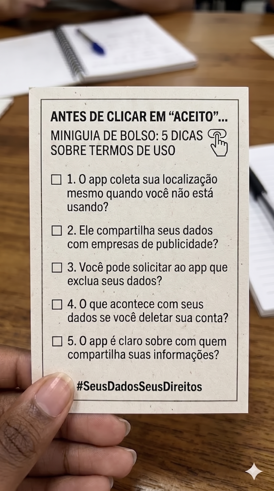

Tradutor de Dados
Nesta oficina, os estudantes serão desafiados a investigar um dos aspectos mais opacos do mundo digital: os Termos de Uso e as Políticas de Privacidade dos aplicativos que utilizam diariamente. Com o apoio de inteligências artificiais (IAs) generativas, como ChatGPT ou Gemini, os estudantes analisarão a linguagem jurídica desses documentos e os reescreverão em uma versão clara e acessível. Ao longo desse processo, compreenderão quais dados são coletados, como são utilizados e quais são os direitos dos usuários previstos na LGPD (Lei Geral de Proteção de Dados) e no ECA Digital (Lei nº 15.211/2025).
A atividade propõe uma jornada de conscientização crítica, na qual os estudantes assumem o papel de analistas de políticas digitais. Nesse sentido, não apenas decodificarão textos complexos, mas também compararão documentos de diferentes plataformas, identificarão práticas mais transparentes ou potencialmente abusivas e produzirão um guia prático voltado ao público jovem. O foco não é “controlar” o comportamento dos estudantes, mas promover letramento digital crítico, deslocando a responsabilidade para as plataformas e empoderando os usuários com conhecimento sobre seus direitos no ambiente digital.
Toda a investigação pode ser realizada 100% online, por meio de ferramentas gratuitas e acessíveis.
Estrutura da Oficina
Materiais
Lista de materiais/softwares/componentes necessários
Preparar
15 minApresentação
O uso de ambientes digitais (como redes sociais, plataformas de vídeo, jogos online, serviços de busca e aplicativos diversos) é, muitas vezes, acompanhado por documentos formais que regulam a relação entre usuário e empresa. Esses documentos, denominados Termos de Uso e Políticas de Privacidade, estabelecem regras de funcionamento, descrevem formas de coleta e tratamento de dados e definem direitos e responsabilidades das partes envolvidas.
Apesar de estruturarem juridicamente a experiência digital, esses textos costumam ser extensos, redigidos em linguagem técnica e apresentados em momentos de navegação que favorecem decisões rápidas. O resultado é um cenário em que o aceite ocorre com frequência, mas a compreensão nem sempre acompanha esse gesto.
Esta oficina parte de um deslocamento simples, mas potente: e se, em vez de aceitar, fosse feita uma investigação, transferindo o foco do clique para o conteúdo? A atividade consiste na análise de trechos reais de Termos de Uso e Políticas de Privacidade de plataformas amplamente utilizadas. Os estudantes serão orientados a identificar quais dados são coletados, para quais finalidades são descritos, em que condições podem ser compartilhados e quais mecanismos de controle são oferecidos ao usuário.
Como ferramenta de apoio, serão utilizadas IAs generativas (como ChatGPT ou Gemini) para reescrever trechos jurídicos em linguagem mais acessível. A proposta não é substituir a leitura crítica, mas tencioná-la: comparar o texto original com a versão reformulada, identificar possíveis simplificações excessivas e discutir o que se revela (ou se oculta) em cada versão.
A investigação será articulada com base em dois marcos legais fundamentais:
- LGPD – que define direitos como acesso, correção e exclusão de dados.
- ECA Digital (Lei nº 15.211/2025) – que estabelece proteções específicas para crianças e adolescentes no ambiente digital.
Ao final, os estudantes produzirão um guia prático voltado a outros usuários e, nele, reunirão pontos de atenção que devem ser observados antes de aceitar os termos de uma plataforma.
O foco desta oficina não é gerar medo ou vigilância permanentes, mas desenvolver leitura crítica, compreensão jurídica básica e autonomia consciente diante das tecnologias digitais.

helpPerguntas reflexivas
- O consentimento digital pode ser considerado livre quando a alternativa é não acessar o serviço?
- Existe diferença entre coleta necessária para funcionamento e coleta para fins comerciais? Como distingui-las?
- Termos de Uso deveriam ser padronizados e simplificados por lei? Por quê?
- Se uma cláusula é ambígua, quem tende a se beneficiar dessa ambiguidade?
- É possível exercer os direitos previstos na LGPD sem compreender claramente o que foi autorizado?
- Transparência significa apenas disponibilizar o documento ou também garantir que ele seja compreensível? Por quê?
O núcleo conceitual desta oficina é o consentimento digital como ato jurídico e econômico. Ao aceitar os Termos de Uso de uma plataforma, o usuário, além de concordar com as regras de convivência, também autoriza práticas específicas de tratamento de dados que podem envolver análise comportamental, personalização algorítmica, compartilhamento com parceiros comerciais e retenção prolongada de informações.
Nesse cenário, o dado pessoal deixa de ser apenas informação e passa a integrar modelos de negócio baseados em monitoramento, segmentação e previsão de comportamento, tornando a leitura das cláusulas contratuais um modo de compreender as dinâmicas econômicas que sustentam os serviços digitais.
Outro ponto central é que a tradução de um texto jurídico não é um processo neutro. Ao utilizar IAs generativas para reformular trechos dos documentos, introduz-se uma camada adicional de interpretação. A IA reorganiza sentidos, escolhe simplificações e pode alterar nuances importantes. Por isso, na atividade desenvolvida, o uso da tecnologia será acompanhado de uma análise comparativa entre a versão original e a versão reformulada, a fim de se destacar possíveis deslocamentos de significado.
A discussão será ancorada em dois referenciais normativos brasileiros:
- LGPD – que estabelece princípios, como finalidade, necessidade e transparência no tratamento de dados pessoais, além de assegurar direitos ao titular, como acesso, correção e eliminação de dados.Acesso: https://www.gov.br/esporte/pt-br/acesso-a-informacao/lgpd
- ECA Digital (Lei nº 15.211/2025) – que reforça a proteção de crianças e adolescentes no ambiente digital, incluindo restrições ao perfilamento para publicidade e mecanismos de responsabilização das plataformas.Acesso: https://www.gov.br/mj/pt-br/assuntos/sua-protecao/sedigi/eca-digital
O elemento-chave, portanto, não envolve somente a leitura dos Termos de Uso, mas sobretudo a análise crítica das relações jurídicas, econômicas e tecnológicas que se estruturam com base neles.
Perfilamento para publicidade
Perfilamento é o termo técnico usado na lei para descrever a prática de coletar dados de comportamento do usuário (histórico de navegação, buscas, localização, tempo de tela) com o objetivo de se criar um perfil detalhado de seus gostos e hábitos. Esse perfil é, então, usado por empresas de publicidade para exibir anúncios direcionados e personalizados. O ECA Digital proíbe essa prática quando aplicada a crianças e adolescentes.
tips_and_updatesDicas de condução
Embarque
Antes de usar qualquer ferramenta digital, proponha uma atividade provocativa para que os estudantes experimentem o contraste entre o ato de aceitar um termo e a real compreensão de seu conteúdo.
Instrua a turma a ler o trecho projetado ou impresso a seguir (trecho real adaptado de Termos de Uso da plataforma Canva). Em seguida, peça aos estudantes que tentem responder às perguntas em seus cadernos.
Exemplo de Termo de Uso
Pode ser substituído por outro à escolha do educador.
“Você não poderá, por si mesmo ou por meio de terceiros, (i) alugar, arrendar, vender, distribuir, oferecer em uma agência de serviços, sublicenciar ou disponibilizar de outra forma o Serviço ou o Conteúdo Licenciado a terceiros (exceto conforme permitido por estes Termos); (ii) copiar, replicar, descompilar, fazer engenharia reversa, tentar derivar o código-fonte, modificar ou criar trabalhos derivados do Serviço, ou de qualquer parte dele; (iii) acessar o Serviço para fins de benchmarking de desempenho; (iv) acessar o Serviço para fins de criação ou comercialização de um produto concorrente; (v) usar o Serviço para criar, armazenar ou transmitir um vírus ou código malicioso; (vi) usar uma rede privada virtual (VPN) para contornar preços baseados em localização geográfica ou acesso a conteúdo; (vii) usar o Serviço para transmitir e-mails não solicitados ou se envolver em spam ou phishing; (viii) usar qualquer forma de mineração, extração ou scraping de dados no Serviço e/ou no conteúdo disponível nele para qualquer finalidade (incluindo, entre outras, finalidades de IA, aprendizado de máquina e ciência de dados); ou (ix) contornar as medidas que podemos usar para impedir ou restringir o acesso ao Serviço, incluindo, entre outras, recursos que impedem ou restringem o uso ou a cópia de qualquer conteúdo ou impõem limitações ao uso do Serviço ou do Conteúdo Licenciado.”
Texto presente em: https://www.canva.com/pt_br/politicas/terms-of-use/
Após aproximadamente 3 minutos, convide voluntários a compartilhar suas respostas. Sistematize no quadro as principais dificuldades apontadas, organizando-as em categorias que evidenciem barreiras de compreensão, como vocabulário técnico, ambiguidade, extensão do período e ausência de exemplos concretos.
Criar
55 minProtótipo
Termo de Uso: Tradutor de Dados

Traduzindo trecho dos Termos de Uso
Após a atividade provocativa em que os estudantes tentaram compreender um trecho real de Termos de Uso sem apoio tecnológico, inicia-se o uso da IA como ferramenta de mediação. O objetivo não é delegar integralmente a análise a essa ferramenta, mas utilizá-la de maneira estratégica para decodificar textos complexos, mantendo postura crítica diante das reformulações e comparando constantemente a versão adaptada ao texto original.
Oriente os estudantes a trabalhar em duplas ou pequenos grupos. Cada grupo deve ter acesso a um computador com internet e a uma conta no ChatGPT, no Google Gemini ou em outra IA escolhida pelo educador.
helpPerguntas reflexivas
- Os dois aplicativos coletam os mesmos tipos de dados? Quais diferenças relevantes foram identificadas?
- Qual dos dois aplicativos apresenta maior nível de transparência na descrição do uso dos dados? Quais elementos justificam essa percepção?
- Algum dos aplicativos permaneceu difícil de compreender mesmo com o apoio da IA? O que isso pode indicar sobre a estrutura ou a intencionalidade do texto?
- Com base na tabela comparativa elaborada, qual dos aplicativos inspira maior confiança? Quais critérios fundamentam essa avaliação?
tips_and_updatesDicas de condução
Refletir
20 minAprendizados
Dinâmica de compartilhamento: Galeria dos guias
Organize um momento para que os grupos compartilhem suas descobertas e apresentem os guias produzidos. Como cada grupo pode ter analisado diferentes aplicativos, a troca de resultados enriquece a turma toda.
Sugestão de organização em dois momentos
Momento 1 – Compartilhamento dos guias (10 min)
Peça aos grupos que apresentem rapidamente (1–2 minutos) as 5 perguntas da checklist e comentem qual aplicativo analisado foi mais transparente e qual foi mais opaco, justificando os critérios para essa avaliação.
Sugira aos grupos que materializem seus guias em um formato físico ou digital para que possam ser distribuídos e utilizados por outros jovens. Algumas ideias práticas envolvem:
- Guia de bolso impresso: escrever as cinco perguntas em um pequeno cartão, confeccionado com papel-cartão ou folha sulfite dobrada, que caiba na carteira ou no bolso.
- Checklist digital: criar um arquivo de texto, uma imagem ou um documento compartilhável (Google Docs, Canva) para ser enviado aos colegas por mensagem.
- Post para redes sociais: produzir uma imagem com as 5 perguntas no formato de post para ser compartilhada em grupos da escola ou redes sociais da turma.
- Mural da sala: se houver espaço, fixar os guias em um mural visível para que todos possam consultar ao longo do ano.
Se possível, incentive os estudantes a utilizar materiais mais resistentes para versões físicas do guia. O essencial é que o material seja prático, acessível e facilmente consultável no cotidiano, priorizando funcionalidade em vez de acabamento estético.
Momento 2 – Discussão coletiva (10 min)
Conduza uma roda de conversa utilizando as perguntas reflexivas a seguir. Registre as principais conclusões em um quadro visível para toda a turma.
helpPerguntas reflexivas
- Antes da oficina, havia o hábito de ler os Termos de Uso? Após a atividade, houve mudança de postura?
- Qual informação foi considerada mais surpreendente sobre a coleta de dados?
- Algum aplicativo analisado demonstrou maior clareza nas explicações? Algum apresentou linguagem particularmente opaca? O que isso indica sobre a relação entre empresa e usuário?
- Se um colega fosse instalar um novo aplicativo agora, quais orientações práticas poderiam ser oferecidas antes de ele clicar em "Aceito"?
- A complexidade dos Termos de Uso pode ser interpretada como estratégia deliberada? Quais indícios sustentam essa hipótese?
- Quais aprendizagens desta oficina podem ser aplicadas no cotidiano digital?
Contextualização legal – LGPD e ECA Digital
Antes de encerrar, reserve alguns minutos para contextualizar a importância das legislações que protegem dados pessoais, especialmente de crianças e adolescentes. O educador pode sintetizar a discussão nos seguintes termos:
Explique que investigar e questionar Termos de Uso é exercício de cidadania digital. A LGPD estabelece regras sobre coleta, armazenamento e uso de dados pessoais, garantindo direitos como acesso, correção e exclusão. Já o ECA Digital amplia a proteção no ambiente online, incluindo restrições ao perfilamento e exigências específicas para contas de menores. Nesse contexto, a transparência deixa de ser um favor das empresas e passa a ser uma obrigação legal, além de deslocar a responsabilidade da compreensão integral do usuário para o dever de clareza das plataformas.
Para ir além
30 minSugira caminhos para que os estudantes continuem explorando e aprofundando seus conhecimentos.
- Entrevistar familiares: convidar pais ou responsáveis para responder às 5 perguntas do guia sobre um aplicativo que usam. Comparar as respostas e debater, em família, questões relacionadas à privacidade digital.
- Analisar aplicativos desconhecidos: escolher um aplicativo menos conhecido (ex.: de jogos, de edição de fotos, de clima) e verificar se suas políticas de privacidade são transparentes ou abusivas.
- Pesquisar notícias sobre violações de dados: buscar casos reais de empresas que vazaram dados de usuários e discutir as consequências jurídicas e sociais desses episódios. Investigar quais medidas foram adotadas após o incidente e se houve responsabilização efetiva das empresas.
- Criar uma campanha na escola: produzir cartazes ou posts para redes sociais com as 5 perguntas do guia, a fim de conscientizar outros jovens sobre a importância de ler (ou pelo menos questionar) os Termos de Uso.
- Comparar políticas existentes antes e depois da LGPD: pesquisar como eram os Termos de Uso de um aplicativo antes da LGPD e como são agora. Houve melhora na transparência?